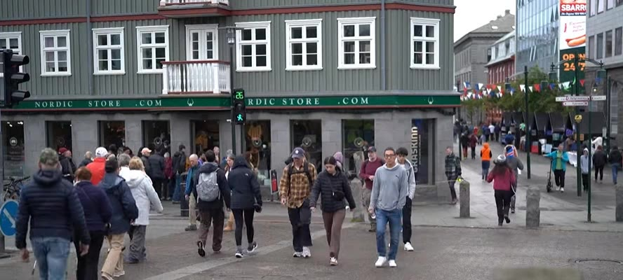

REYKJAVÍK, ICELAND · 64°08′N 21°56′W
아이슬란드에서 온 소식
고향을 떠나 아이슬란드로 온 재림교회 자원봉사자 칼리. 하나님께서 열어 주신 문으로 들어가, 그곳 사람들과 함께 살며 섬기는 이야기입니다.
-

도착계획보다 먼저 순종으로
자원봉사자로 아이슬란드에 왔습니다. 구체적인 계획을 세우고 온 것은 아니었습니다.
-
 함께 살기
함께 살기가정 속으로 들어가 섬기다
가정들과 함께 지내며 필요한 일을 찾아 돕고, 양 농장 가정에서는 양을 우리로 모는 일도 합니다.
-
 다음 세대
다음 세대청소년과 청년이 모이다
사역이 청소년과 청년들에게 집중되며 서로 만나는 자리가 생겼습니다.
“무엇과도 바꾸고 싶지 않아요.”
칼리 · 재림교회 자원봉사자